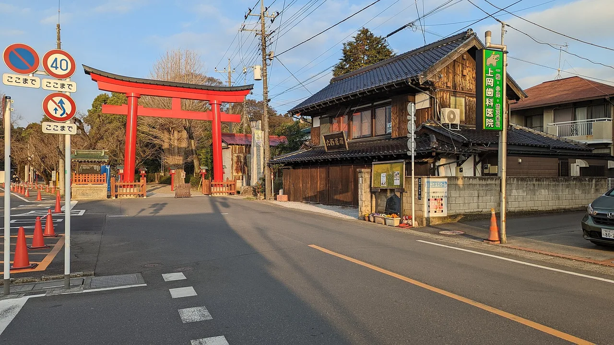

Peregrinación anime en Japón: una guía respetuosa sobre seichi junrei
Por todo Japón, escaleras corrientes, pasos a nivel y peldaños de santuarios se han convertido silenciosamente en seichi — "tierra sagrada" para los fans de un anime en particular. Visitarlos se llama seichi junrei (聖地巡礼), peregrinación anime. Esta guía explica qué es, los lugares reales y bien documentados que hay detrás de obras famosas, cómo los verifican los fans y — lo más importante — cómo visitarlos sin que los lugareños lamenten que su ciudad haya aparecido en pantalla.

¿Qué es seichi junrei?
Seichi junrei (聖地巡礼) significa literalmente "peregrinación a lugares sagrados". Las palabras están tomadas de la peregrinación religiosa — como la ruta de los 88 templos de Shikoku — pero los fans las usan para un viaje secular: visitar los lugares del mundo real que aparecen como fondos y escenarios en anime, manga o películas. Un seichi (聖地) puede ser una sola escalera, una ciudad entera, una escuela o un tramo de costa. La mitad de la gracia está en situarse donde se encuadró una escena clave y alinear la vista real con la dibujada.
Hoy es una parte genuina de la economía turística de Japón. Una encuesta de 2024 de la Agencia de Turismo de Japón reveló que aproximadamente el 11–13% de los visitantes extranjeros citaron la visita a lugares relacionados con películas y anime — una proporción que ha ido aumentando año tras año. (Distintas tablas oficiales reportan 11,8% y 13,1% para 2024, así que trátalo como un rango, no como una cifra única.)
Cómo empezó y los "Anime 88 Spots"
El fenómeno moderno suele datarse en 2007, cuando la serie de comedia Lucky Star envió una repentina oleada de fans al Santuario Washinomiya en Saitama, cuyo torii aparece en la apertura. Se dice que el número de visitantes allí pasó de unos 90.000 a 450.000 en tres años — una cifra lo suficientemente repetida como para ser ilustrativa, aunque sea una estimación mediática y no un recuento auditado.
En 2017, la Asociación de Turismo Anime lanzó los "Japanese Anime 88 Spots" (アニメ聖地88), una lista anual votada por fans de lugares e instalaciones de anime diseñada para formar una ruta de peregrinación nacional. El número 88 evoca deliberadamente los 88 templos de la Peregrinación de Shikoku. El listado se renueva cada año — la edición 2026 se presentó en febrero de 2026 — así que el sitio oficial, y no ningún blog, es la fuente de verdad para la lista actual.
La Asociación de Turismo Anime mantiene la lista oficial y siempre actualizada de los "Anime 88 Spots", renovada anualmente y elegida en parte mediante una votación pública de fans. Úsala para confirmar qué obras y lugares aparecen este año — y luego vuelve aquí para el contexto de viaje y las frases en japonés.
Spots famosos y bien documentados por prefectura
Estas correspondencias están ampliamente documentadas y confirmadas por fans. La mayoría son lugares públicos — santuarios, parques, estaciones — pero trata la sección de etiqueta que aparece más abajo como parte del itinerario, no como algo secundario.
| Obra | Lugar real | Ciudad · Prefectura | Por qué van los fans | Guía gratuita |
|---|---|---|---|---|
| Your Name君の名は。 | Escalera del Santuario Suga (Otokozaka) | Shinjuku, Tokyo | Las escaleras del reencuentro final — posiblemente el spot de peregrinación anime más famoso del mundo | Tokyo → |
| Your Name君の名は。 | Estación de Hida-Furukawa y biblioteca municipal | Hida, Gifu | Modelo real entretejido en "Itomori"; donde comienza la búsqueda de Taki | Gifu → |
| Slam Dunkスラムダンク | Paso a nivel de Kamakurakōkō-mae | Kamakura, Kanagawa | El paso a nivel de Enoden con el mar de fondo, de la apertura — guía completa → | Kanagawa → |
| Evangelionエヴァンゲリオン | Caldera de Hakone ("Tokyo-3") | Hakone, Kanagawa | El escenario real de Tokyo-3 — señalización de NERV, la tienda Eva, el lago Ashi y el teleférico — guía completa → | Kanagawa → |
| Lucky Starらき☆すた | Santuario Washinomiya | Kuki, Saitama | El santuario que inició el seichi junrei moderno en 2007 | Saitama → |
| K-On!けいおん！ | Antigua Escuela Primaria de Toyosato | Toyosato, Shiga | Modelo de la sala del club; el edificio está conservado para los fans | Shiga → |
| Free!フリー！ | Costa de Uradome y puerto de Tajiri | Iwami, Tottori | El modelo costero de la ficticia "Iwatobi" | Tottori → |
| Love Live!ラブライブ！ | Kanda Myōjin (Santuario Kanda) | Chiyoda, Tokyo | El santuario "hogar" de μ's cerca de Akihabara; los fans dejan ema temáticos | Tokyo → |
| Anohanaあの花 | Puente de Chichibu y casco antiguo | Chichibu, Saitama | Paisaje urbano fielmente recreado; la oficina de turismo reparte mapas | Saitama → |
| The Garden of Words言の葉の庭 | Jardín Nacional Shinjuku Gyoen | Shinjuku, Tokyo | Los encuentros matutinos bajo la lluvia de Takao y Yukino | Tokyo → |
| Hanasaku Iroha花咲くいろは | Yuwaku Onsen | Kanazawa, Ishikawa | Modelo del ryokan "Kissuisō"; inspiró un festival real de linternas | Ishikawa → |
| Laid-Back Campゆるキャン△ | Lago Motosu y campings de la zona de Minobu | Minobu y alrededores, Yamanashi | Escenarios de acampada con el monte Fuji; la prefectura gestiona colaboraciones oficiales | Yamanashi → |
Una advertencia que se repite mucho en internet: "Itomori" de Your Name es una mezcla de varios lugares reales (elementos de Gifu y Nagano), así que ninguna ciudad concreta "es" Itomori. Y las inspiraciones atmosféricas — como el Asakusa de la era Taishō para Demon Slayer — son ambientes, no spots exactos que coincidan con la pantalla. Cuando una guía afirme que un edificio concreto "es" un lugar, compruébalo con la lista oficial Anime 88 o con la oficina de turismo local.
La etiqueta que mantiene a los fans bienvenidos
Esta es la parte más importante. Muchas "tierras sagradas" son barrios corrientes donde la gente vive, se desplaza y trabaja. Cuando la peregrinación deriva en sobreturismo, las ciudades reaccionan: el paso a nivel de Slam Dunk en Kamakura cuenta ahora con carteles de advertencia multilingüe, cámaras las 24 horas y — desde 2025 — guardias apostados y una zona de fotografía designada de prueba, además de la ordenanza de buenas maneras de Kamakura de 2019, tras años de fans bloqueando la carretera y la vía del tren y fotografiando a los residentes. Toda la afición depende de que los visitantes se comporten bien.
- Nunca bloquees carreteras, pasos a nivel ni puertas de tren para hacerte una foto. Espera tu turno; apártate completamente del tráfico y las vías.
- No fotografíes a los residentes, sus casas, matrículas ni niños. Encuadra el paisaje, no la vida privada de las personas.
- Habla en voz baja y no te reúnas en grupos grandes y ruidosos, especialmente a primera hora de la mañana o a última de la tarde.
- No entres en propiedades privadas. Las escuelas, casas particulares e interiores de tiendas están prohibidos salvo que haya una colaboración oficial que invite a los visitantes.
- En los santuarios, reza correctamente antes de tratarlo como un spot fotográfico — es ante todo un lugar de fe, y seichi en segundo lugar.
- Gasta un poco en el comercio local — una comida, una bebida, un recuerdo. Eso transforma "los fans que colapsan nuestra estación" en "los fans que mantienen abiertas nuestras tiendas".
Los fans confirman los lugares mediante butaitanbō (舞台探訪, "búsqueda de escenas") — comparando fotogramas del anime con el paisaje real — y muchas oficinas de turismo (Chichibu, Nerima, Iwami) ya reparten mapas oficiales de localizaciones. Partir de esos mapas, en lugar de deambular por el jardín trasero de alguien, es a la vez más preciso y más respetuoso.
Algunos enlaces de arriba son de afiliado. Podemos ganar una comisión sin coste adicional para ti. Solo listamos servicios que nosotros mismos usaríamos.
El japonés que usarás de verdad
La peregrinación te lleva a pueblos pequeños donde unas pocas palabras marcan la diferencia — y donde el personal de las estaciones y los tenderos se animan de verdad cuando un fan extranjero conoce el vocabulario.
| Japonés | Lectura | Significado |
|---|---|---|
| 聖地巡礼 | seichi junrei | peregrinación anime — literalmente "peregrinación a lugares sagrados" |
| 聖地 | seichi | "tierra sagrada" — un lugar real venerado por los fans |
| 舞台 | butai | el escenario / lugar donde transcurre una historia |
| 舞台探訪 | butai tanbō | "búsqueda de escenas" — hacer coincidir lugares reales con una obra |
| 背景 | haikei | fondo — el paisaje dibujado que los fans comparan con la realidad |
| 絵馬 | ema | la tablilla de madera con deseos que los fans decoran en los santuarios seichi |
| 撮影してもいいですか？ | satsuei shite mo ii desu ka? | "¿Puedo hacer una foto?" — la forma educada de preguntar antes de fotografiar |
¿Quieres que se te queden grabadas? El quiz de batalla JLPT gratuito repasa vocabulario de viaje y cultura como este con repetición espaciada.
El seichi junrei encadena de forma natural con otras búsquedas basadas en localizaciones: Pokéfuta (tapas de alcantarilla Pokémon) →, tarjetas de alcantarilla gratuitas → y tapas de alcantarilla de Gundam →. Muchos fans marcan las cuatro en una sola prefectura.
Preguntas frecuentes
P. ¿Qué es la peregrinación anime (seichi junrei)?
R. Consiste en visitar los lugares del mundo real que aparecen como escenarios o fondos en anime, manga o películas. El término japonés seichi junrei (聖地巡礼) significa "peregrinación a lugares sagrados", tomando prestado el lenguaje de la peregrinación religiosa tradicional.
P. ¿Cuándo se popularizó la peregrinación anime?
R. Se generalizó en 2007, cuando los fans de Lucky Star acudieron en masa al Santuario Washinomiya en Saitama — ampliamente citado como el primer gran caso moderno.
P. ¿Qué es la lista "Anime 88 Spots"?
R. Una lista anual de lugares de anime elegidos por la Asociación de Turismo Anime, en parte mediante una votación pública de fans. El número 88 hace referencia a los 88 templos de la Peregrinación de Shikoku. El listado actual está en animetourism88.com.
P. ¿Dónde está ambientada Your Name (Kimi no Na wa)?
R. Los modelos reales incluyen la escalera del Santuario Suga en Shinjuku, Tokyo (las escaleras del reencuentro final) e Hida-Furukawa en Gifu. Ten en cuenta que la ciudad ficticia "Itomori" mezcla varios lugares, así que ninguna ciudad es literalmente Itomori.
P. ¿Cuáles son los spots de peregrinación anime más famosos?
R. Entre los más conocidos: las escaleras del Santuario Suga (Your Name), el paso a nivel de Kamakurakōkō-mae (Slam Dunk), el Santuario Washinomiya (Lucky Star), Kanda Myōjin (Love Live!) y Shinjuku Gyoen (The Garden of Words).
P. ¿Está bien visitar estos lugares?
R. Sí — muchos son santuarios, parques o estaciones públicas. Pero también son barrios reales. Sigue la etiqueta indicada: no entres en propiedades privadas, no bloquees carreteras ni pasos a nivel, no fotografíes a los residentes y mantén el ruido al mínimo. Kamakura incluso aprobó una ordenanza de etiqueta e instaló cámaras tras el sobreturismo de Slam Dunk.
P. ¿Cómo saben los fans cuál es el lugar "real"?
R. Mediante butaitanbō (búsqueda de escenas): comparando fotogramas del anime con el paisaje real. Las comunidades documentan mapas de forma colaborativa en internet, y algunas oficinas de turismo (Chichibu, Nerima, Iwami) proporcionan mapas oficiales de localizaciones.